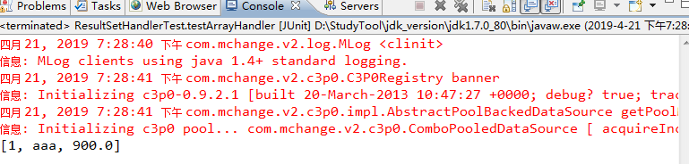
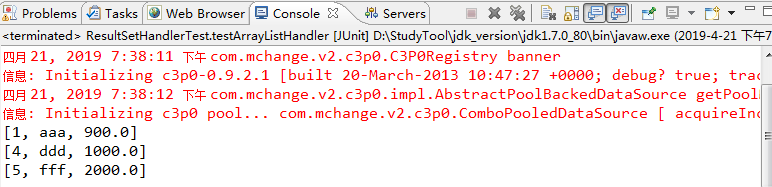
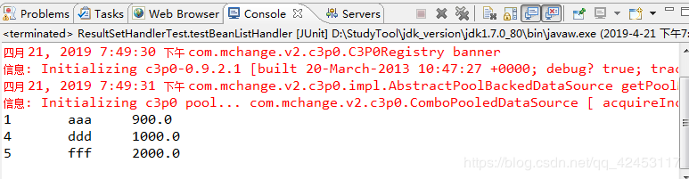
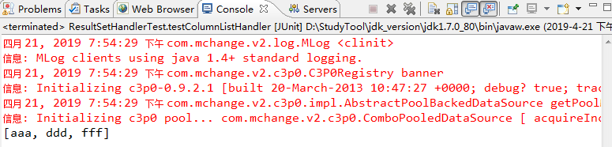
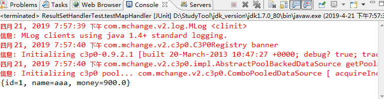
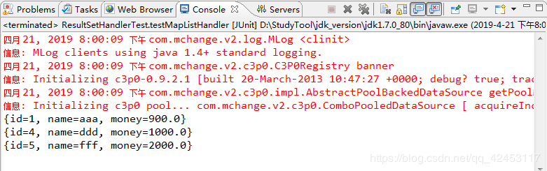
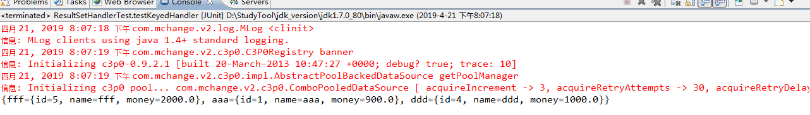
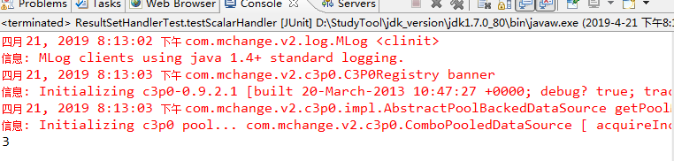

原文出处:本文由博客园博主#Temptation提供。
原文连接:https://www.cnblogs.com/blizzawang/p/11411792.html
原文连接:https://www.cnblogs.com/blizzawang/p/11411792.html
刚才讲了使用QueryRunner插入、修改、更新数据，现在来学习一下使用QueryRunner进行数据库表查询。
通过QueryRunner类的query()方法即可完成数据库表的查询操作，但是在查询的时候需要实现ResultSetHandler接口来将结果集封装成对象。可以通过自己实现接口，但很显然，我们应该使用DBUtils工具包提供的实现类来实现封装。
在DBUtils框架中，共提供了九个ResultSetHandler的实现类。
- ArrayHandler：把结果集中的第一行数据转成对象数组。
- ArrayListHandler：把结果集中的每一行数据都转成一个对象数组，再存放到List中。
- BeanHandler：将结果集中的第一行数据封装到一个对应的JavaBean实例中。
- BeanListHandler：将结果集中的每一行数据都封装到一个对应的JavaBean实例中，存放到List里。
- ColumnListHandler：将结果集中某一列的数据存放到List中。
- MapHandler：将结果集中的第一行数据封装到一个Map里，key是列名，value就是对应的值。
- MapListHandler：将结果集中的每一行数据都封装到一个Map里，然后再存放到List
- KeyedHandler(name)：将结果集中的每一行数据都封装到一个Map里(List
- ScalarHandler：将结果集中的列的信息转换到一个对象中
分别通过案例感受一下。
新建测试类ResultSetHandlerTest
然后添加成员变量
private ComboPooledDataSource dataSource = new ComboPooledDataSource();添加ArrayHandler的测试代码
@Test
public void testArrayHandler() throws SQLException{
//ArrayHandler 将结果集的第一行数据存入Object数组
QueryRunner queryRunner = new QueryRunner(dataSource);
String sql = "select * from account";
//数组的每一个元素对应第一行数据的每一列
Object[] objects = queryRunner.query(sql, new ArrayHandler());
System.out.println(Arrays.toString(objects));
}运行代码

添加ArrayListHandler测试代码
@Test
public void testArrayListHandler() throws SQLException{
//ArrayListHandler 将结果集的每一行数据存入Object数组，然后存入List
QueryRunner queryRunner = new QueryRunner(dataSource);
String sql = "select * from account";
List<Object[]> list = queryRunner.query(sql, new ArrayListHandler());
for(Object[] objects : list){
System.out.println(Arrays.toString(objects));
}
}运行代码

添加BeanHandler测试代码
@Test
public void testBeanHandler() throws SQLException{
//BeanHandler 将结果集的第一行数据封装到JavaBean对象中
QueryRunner queryRunner = new QueryRunner(dataSource);
String sql = "select * from account";
//传入Account.class参数是为了在方法中通过反射构造Account对象实例
Account account = queryRunner.query(sql, new BeanHandler<Account>(Account.class));
System.out.println(account.getId());
System.out.println(account.getName());
System.out.println(account.getMoney());
}运行代码
2.png)
注意事项：使用BeanHandler，表列名必须与Bean类的属性名称一致。
添加BeanListHandler测试代码
@Test
public void testBeanListHandler() throws SQLException{
//BeanListHandler 将结果集每一条数据都封装到JavaBean对象，再存入List
QueryRunner queryRunner = new QueryRunner(dataSource);
String sql = "select * from account";
List<Account> list = queryRunner.query(sql, new BeanListHandler<Account>(Account.class));
for(Account account : list){
System.out.print(account.getId() + "\t");
System.out.print(account.getName() + "\t");
System.out.print(account.getMoney());
System.out.println();
}
}运行代码

添加ColumnListHandler测试代码
@Test
public void testColumnListHandler() throws SQLException{
//ColumnListHandler 获得结果集的某一列
QueryRunner queryRunner = new QueryRunner(dataSource);
String sql = "select * from account";
//泛型为什么写Object 因为每列的类型都不一样
List<Object> list = queryRunner.query(sql, new ColumnListHandler("name"));
System.out.println(list);
}运行代码

添加MapHandler测试代码
@Test
public void testMapHandler() throws SQLException{
//MapHandler 将结果集中的第一行数据封装到Map集合，key是列名，value是数据值
QueryRunner queryRunner = new QueryRunner(dataSource);
String sql = "select * from account";
Map<String, Object> map = queryRunner.query(sql, new MapHandler());
System.out.println(map);
}运行代码

添加MapListHandler测试代码
@Test
public void testMapListHandler() throws SQLException {
// MapHandler 将结果集中的每一行数据封装到Map集合，key是列名，value是数据值，再将Map对象存入List
QueryRunner queryRunner = new QueryRunner(dataSource);
String sql = "select * from account";
List<Map<String,Object>> list = queryRunner.query(sql, new MapListHandler());
for(Map<String,Object> map : list){
System.out.println(map);
}
}运行代码

添加KeyedHandler测试代码
@Test
public void testKeyedHandler() throws SQLException {
// KeyedHandler 将结果集中的每一行数据都封装到Map里，再将Map存入一个Map里,key可以指定为任意列
QueryRunner queryRunner = new QueryRunner(dataSource);
String sql = "select * from account";
Map<Object, Map<String,Object>> map = queryRunner.query(sql, new KeyedHandler("name"));
System.out.println(map);
}运行代码

添加ScalarHandler测试代码
@Test
public void testScalarHandler() throws SQLException{
//ScalarHandler 通常保存只有一行一列的结果数据
QueryRunner queryRunner = new QueryRunner(dataSource);
String sql = "select count(*) from account";
long count = (Long) queryRunner.query(sql, new ScalarHandler(1));
System.out.println(count);
} 运行代码

到这里，九个Hanlder就介绍完毕了。
最常用的几个：
BeanHandler、BeanListHandler、ColumnListHandler、ScalarHandler。